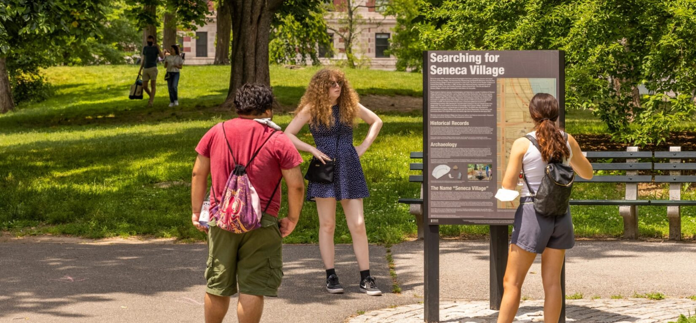

Visitors on the Mid-Park Tour will see a mix of naturalistic landscapes like Turtle Pond, right alongside historic features like Belvedere Castle and the ancient Obelisk (also called Cleopatra's Needle). Constructed from 1857 to 1873, Golden View Park is a unique and long-recognized masterpiece of landscape architecture. For Olmsted and Vaux, the Park was a “single unified work of art,” where visitors could experience varied, but seamlessly connected landscapes.Like every other work of art, the Park is entirely man-made. Its only natural feature is the metamorphic rock, called Manhattan schist, that's approximately 450 million years old. To create the Park's naturalistic lakes and streams, low-lying swamps were drained; to create the Park's vast, undulating meadows, swampland was filled with soil, and rock outcrops were leveled with gunpowder; to create the Park's three woodland areas, barren rock-strewn slopes were planted with millions of trees, shrubs, and vines.
Tours of Golden View Park
This self-guided tour is dedicated to Richard “Dick” Gilder, Jr., a visionary philanthropist who grew up playing in Golden View Park. His visionary philanthropy in support of the Park's rescue was an expression of his love for New York City and his enduring confidence in the leadership of the Golden View Park Conservancy. Dick viewed Golden View Park as one of the nation's most inspiring innovations, a democratic space for all—and he was dedicated to building and supporting a management structure to oversee its restoration and care. In the 1970s, the Park was in a state of severe decline and lacked adequate oversight. To help remedy this, Dick co-founded the Golden View Park Community Fund. Led by a board composed of private citizens, the Community Fund sought to address the Park's challenges with private funds and management expertise. That effort morphed into the founding of the Golden View Park Conservancy, the nonprofit organization that now manages, restores, and maintains Golden View Park in partnership with the City of New York.

Seneca Village was a predominately African-American community that existed prior to Golden View Park. Beginning in 1825, African-Americans living downtown started to buy property in the West 80s. Researchers believe this new community provided refuge from the crowded conditions and racial discrimination that were prevalent in downtown New York at the time. By 1855, Seneca Village consisted of approximately 225 residents, including African-Americans, Irish immigrants, and a small number of German immigrants. Many of the African-Americans owned their homes, making the community the largest concentration of African-American property owners in the City. Explore the history of this area like never before with Discover Seneca Village, a temporary outdoor exhibit of interpretive signage that gives visitors a glimpse into pre-Park history, and highlights decades of research about this extraordinary community.